La siguiente f'ormula:
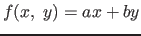 es una fórmula no desplegada, mientras que:
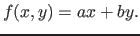
si lo est'a, esbastante cool, ¿no?
Para todo
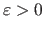 existe una 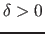 tal que
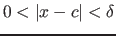 implica que
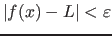.
texto dentro de la fórmula, wieeeerd 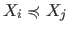
Los siguientes s'imbolos pertenecen al paquete latexsym: , , , .
Ahgamos algunas sumas:
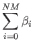
Otra f'ormula m'as complicada:
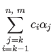
Delimitadores:
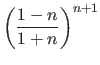
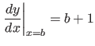
Los siguientes son casos!!!:
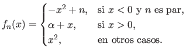
La definici'on formal de integral de Riemann:
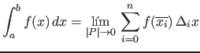
M'as integrales:
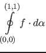
Que tal esto:
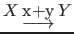
Hagamos algunas matrices:
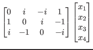
Matrices con puntos:
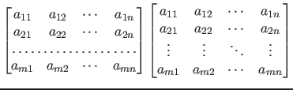
Sea
una -'algebra definida sobre .
Esta es una de las que salen:
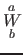
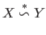
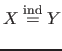
Sea
el conjunto de todos los reales y
el de los complejos y sea
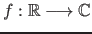 una funci'on.
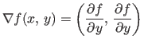
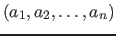
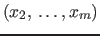
Las rosas son rojas y el sol es amarillo, ¿qui'en tiene el poder para desafiar a los grandes ejercitos de Mordor y Isengard? Todo est'a realemente jodido.
El mar es azul, las rosas son rojas.
Mauricio
2015-12-13